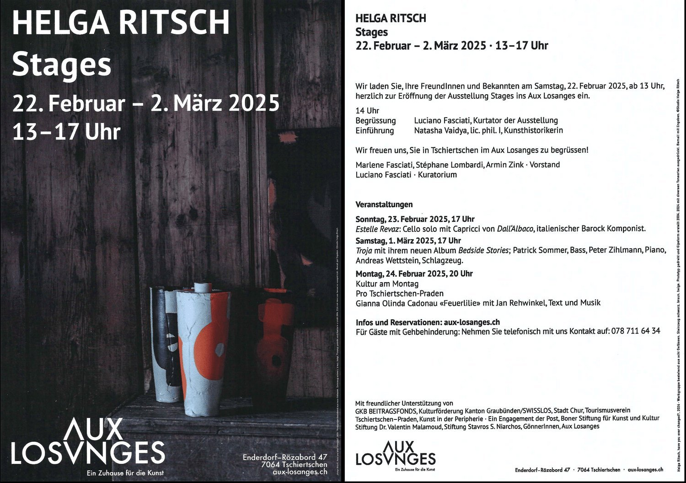
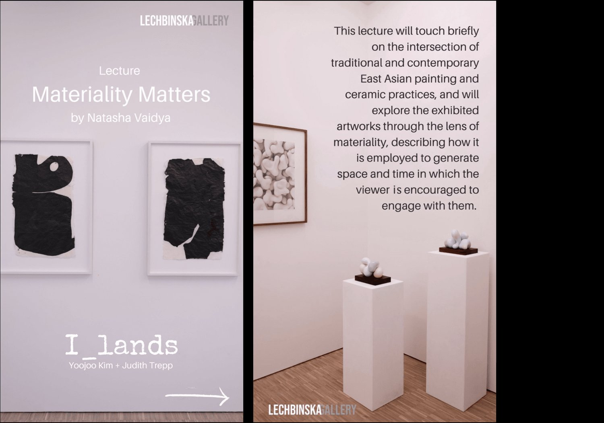
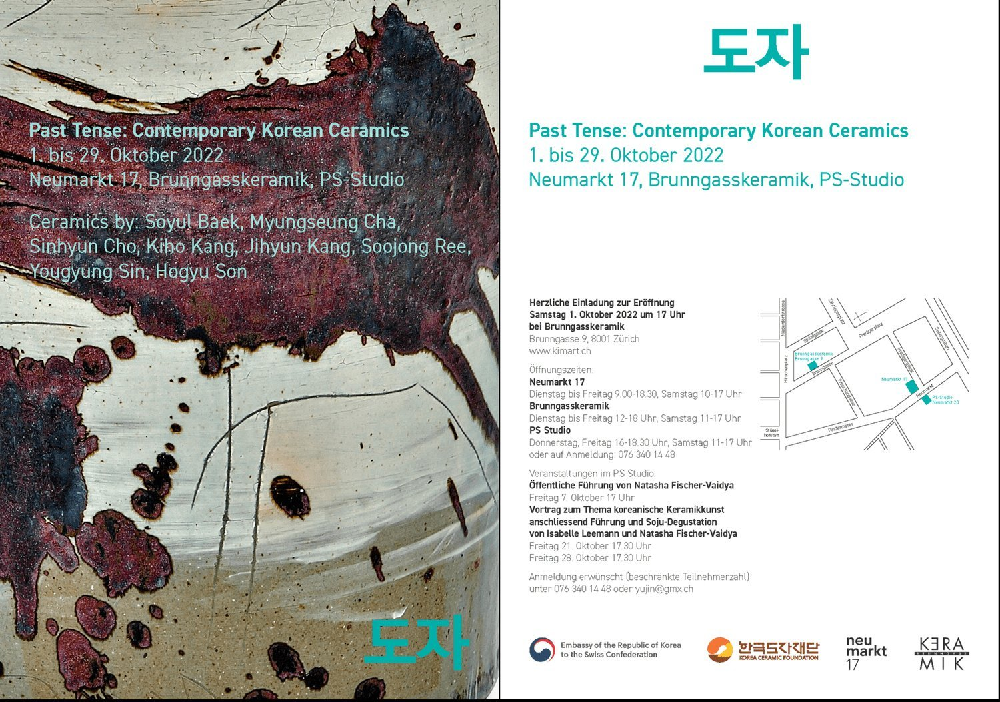
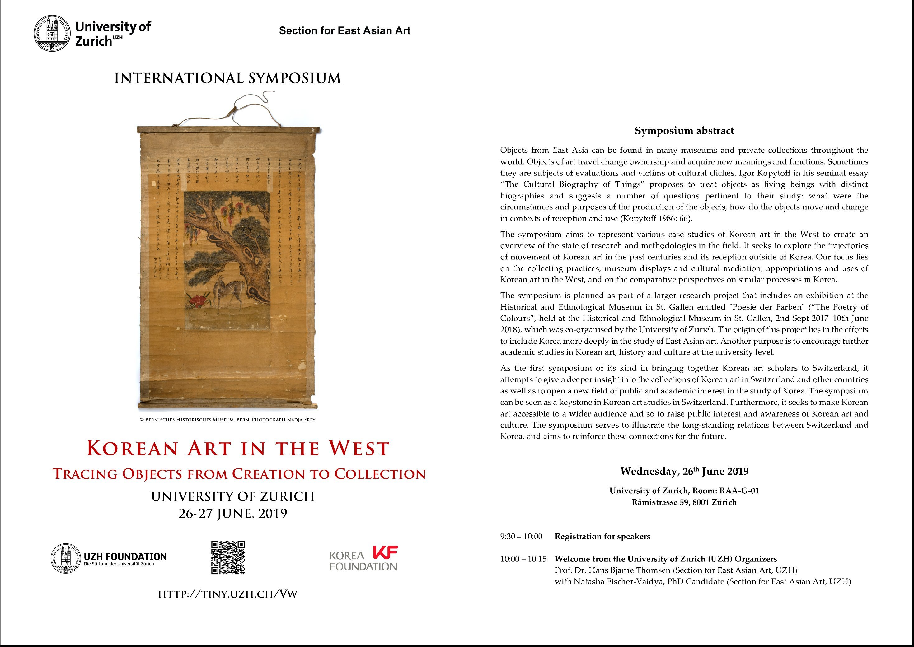
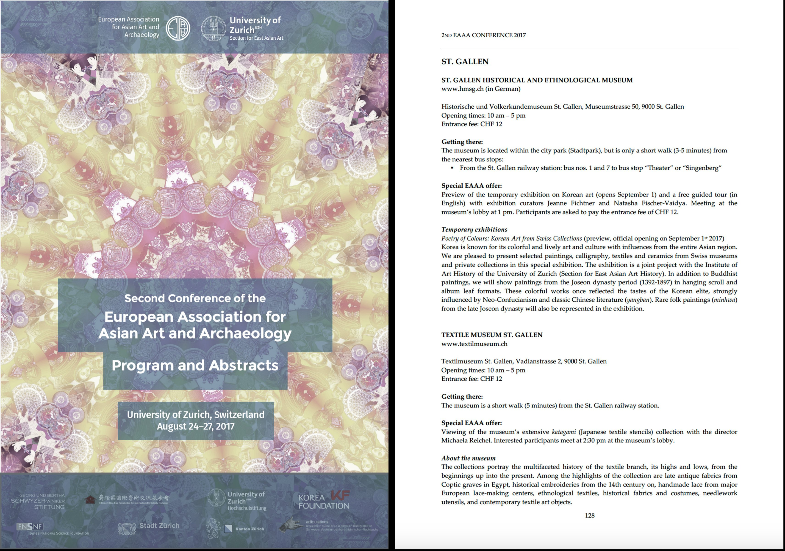
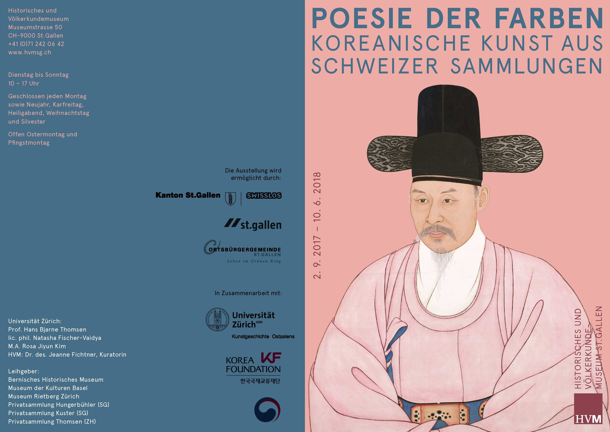
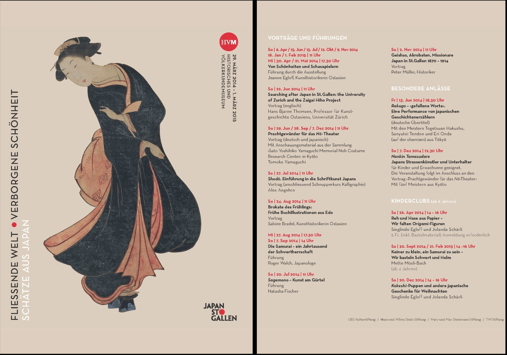
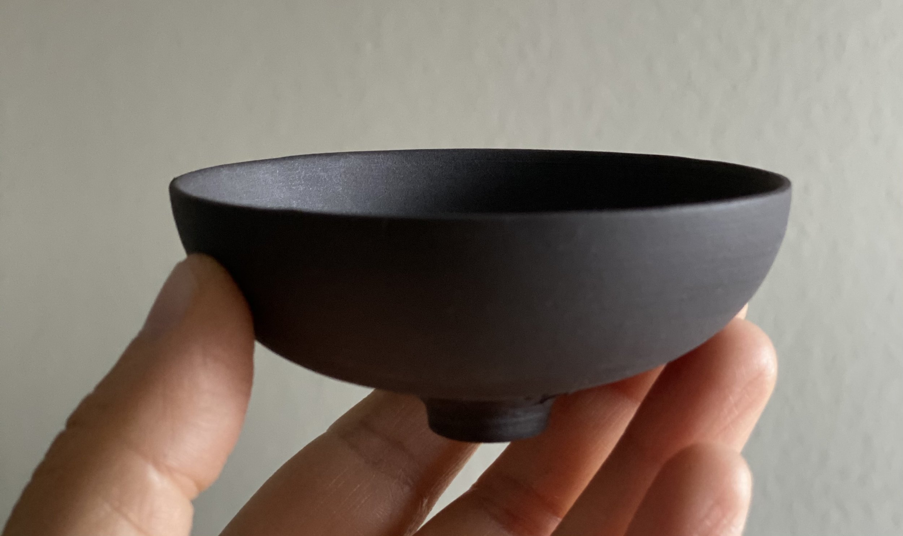

Exhibition introduction
Introduction to the solo exhibition “stages” by
Helga Ritsch,
22.02.2025 – 02.03.2025, Aux Losanges (Tschiertschen).
> read the text
East Asian Art History
>> research focus on early Chinese ceramics and bronzes
Sinology
>> ancient Chinese philology and history
East Asian Ceramics
Early Ritual and Burial Art
Materiality and Form (+ Mutual interactions)
Contemporary Art
Intersections of Art and Digital Technologies
Former Assistant and lecturer in East Asian Art History
(8 years, University of Zurich)
Research in Swiss museum collections
Art Lectures + Guided Tours of exhibitions

Introduction to the solo exhibition “stages” by
Helga Ritsch,
22.02.2025 – 02.03.2025, Aux Losanges (Tschiertschen).
> read the text

Lecture “Materiality Matters” for the exhibition “I_Lands / Islands”, 26.08.2023 – 26.09.2023, Lechbinska Gallery. Works by Judith Trepp (paintings) and Yoojoo Kim (ceramics).
Link
Guided tours of the exhibition “Past Tense: Contemporary Korean Ceramics”, 01.10.2022 – 29.10.2022, curated by Yujin Kim. With works by Soyul Baek, Myungseung Cha, Sinhyun Cho, Kiho Kang, Jiyeon Kang, Sojoong Ree, Youkyung Sin and Hogyu Son.
Link
Symposium “Korean Art in the West. Tracing Objects from Creation to Collection”, 26–27 June 2019, University of Zurich. Co-organised with Prof. Hans Bjarne Thomsen. Individual paper on Swiss collectors of Korean Art.
Link
Guided tour of the exhibition “Poetry of Colours. Korean Art from Swiss Collections”, 27.08.2017, Historical and Ethnological Museum of St. Gallen. Offered as part of the Museum Sunday programme during the 2nd Conference of the European Association for Asian Art and Archaeology (EAAA).
Link
Exhibition “Poetry of Colours. Korean Art from Swiss Collections”, 02.09.2017 – 10.06.2018, Historical and Ethnographical Museum, St. Gallen.
Link
Guided tour “Sagemono” in the exhibition “Floating World, Hidden Beauty — Treasures from Japan”, 21.07.2014, Historical and Ethnological Museum St. Gallen.
Link
From young years, I learned to be attentive to and appreciate the qualities of material and form, observing this particularly in the care with which utensils are selected in East Asian tea practices. This sensibility underlies and informs my choices in collecting ceramic art. Most of the works in my collection are used in my own tea practice.